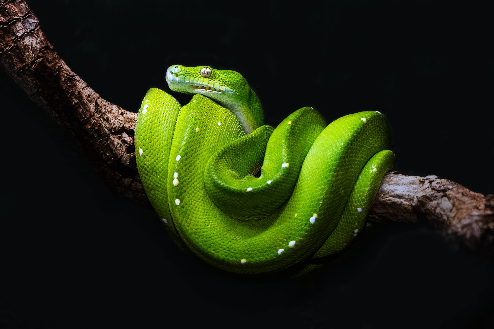

Apples
- Apples are a member of the rose family
- Apples are the most popular fruit in the world
- The average apple has 10 seeds
- It takes about 36 apples to create one gallon of apple cider
- The science of apple growing is called pomology

Autumn
- Autumn babies live longer
- Autumn is the season of love
- Autumn leaves change colour depending on their sugar levels
- Autumn is the the best time to see the Aurora Borealis
- The Irish used to carve turnips and potatoes

Trees
- Trees are the oldest living things on earth
- Tree rings can predict climate change
- Some trees have been to the moon
- More than half of all tree species exist in only one country
- The largest organism in the world, according to mass, is the aspen tree whose colonies of clones can grow up to 8 kilometres (5 mi) long

Oranges
- Oranges are the largest citrus fruit in the world
- Spain has over 35 million orange trees
- Orange juice is the most popular fruit juice in America
- There are over 600 varieties of oranges
- More oranges are killed by lightning than by plant diseases
Clouds
- Clouds can contain millions of tons of water
- There are a range of different types of clouds, the main types include stratus, cumulus and cirrus
- Stratus clouds are flat and featureless, appearing as layered sheets
- Cumulus clouds are puffy, like cotton floating in the sky
- Cirrus clouds are thin and wispy, appearing high in the sky
Birds
- There are 10,000 species of bird
- Birds don’t have teeth
- The smallest bird is a Bee Hummingbird
- A group of birds is called a flock
- Some birds can mimic humans

Snakes
- There are around 3000 different species of snake in the world
- Snakes have been around for approximately 100 million years
- Snakes do have bones
- Snakes have a very acute sense of smell and taste
- Snakes swallow their prey whole

Bananas
- There are more than 1,000 varieties of bananas
- The biggest producers of bananas are India and China
- It is believed bananas originated about 10,000 years ago
- Bananas are classified as berries
- A fungal disease called Panama disease wiped out the Gros Michel variety of banana in the 1950s